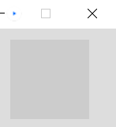
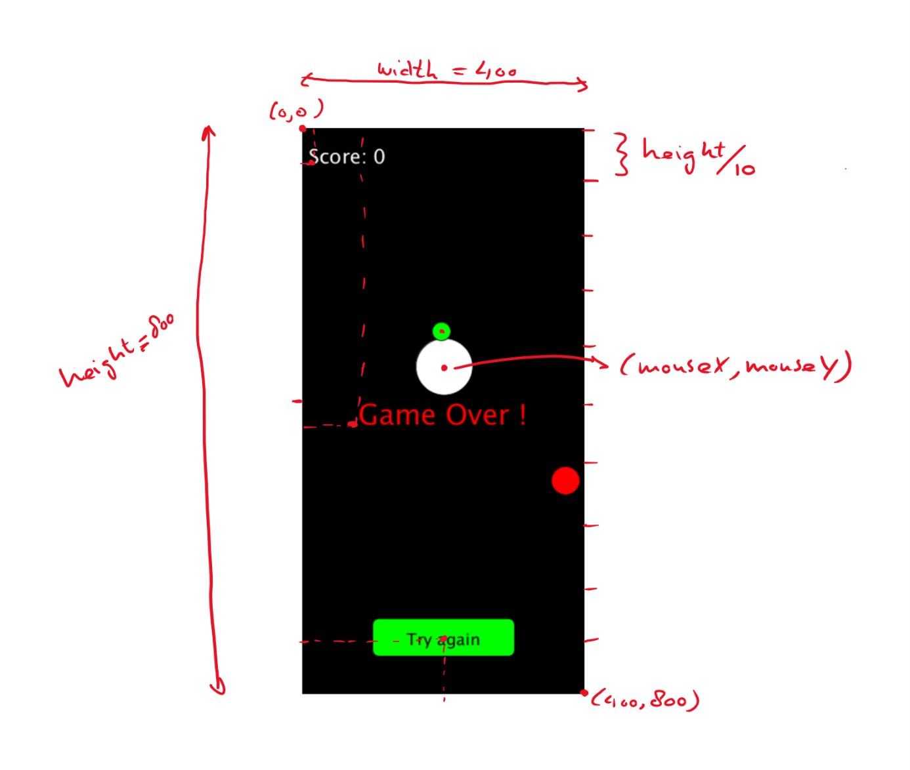

Het spel
Het idee
Corona Chaser
Je moet proberen aan het corona virus te ontkomen, en ondertussen zoveel mogelijk appeltjes eten, deze leveren punten op. Doel is om zoveel mogelijk punten te scoren, terwijl het corona virus steeds sneller in jouw richting komt. Zodra het corona virus je raakt is het spel afgelopen.
Uitwerking
Simpel beginnen
Eerst zorgen we dat alles functioneert, dan mooi maken met leuke plaatjes. In zijn meest simpele vorm ziet het spel er als volgt uit:

De score: het aantal appeltjes dat is gegeten.
Groene cirkel: Corona virus. Deze komt automatisch op je af. En gaat steeds sneller bij verstrijken van de tijd.
Witte cirkel: onze held, wordt bestuurd door middel van de muis (Op een mobiel zal dat via touch werken). Als onze held in aanraking komt met het virus (botst), is hij dood en eindigt het spel. Als onze held in aanraking komt met een appeltje gaat de score omhoog.
Rode cirkel: appeltje, deze verschijnt (spawned) op een willekeurige plek. Wanneer de held een appeltje 'opeet', verschijnt er onmiddellijk een nieuw appeltje op een willekeurige plek en wordt de score met 1 verhoogd.
Knop om spel opnieuw te spelen. Kun je op klikken met de muis (Op een mobiel zal dat via touch werken). Deze knop verschijnt wanneer het Game Over is.
Je zult zien dat het spel mooi maken (met leuke plaatjes), uiteindelijk helemaal niet zo moeilijk meer is.
Bovenstaand idee gaan jullie zelf stap voor stap uitwerken tijdens deze inspiratiesessie(s).
Aanpak
We starten voor nu even met Processing in de Java modus.
Start Processing en kies voor de Java modus in de rechter bovenhoek:

Je hebt nu de zogeheten editor gestart, die er als volgt uitziet:

Klik op de Run-knop. Als het goed is verschijnt ongeveer midden in je scherm het volgende venster. Dit is het venster waarin je game zich gaat afspelen (wat de speler dus te zien krijgt)

Dus zonder dat we nog maar 1 regel code hebben geschreven, gebeurt er toch al heel wat op de achtergrond. Wat je ziet is een venster met daarin een vierkant van 100 x 100 pixels groot. En wat je niet ziet, en toch gebeurt, is dat dit venster 60 keer per seconde opnieuw wordt getekend.
Dit venster moet dus uiteindelijk ons spel worden!
We moeten dus code-regels schrijven in de editor zodanig dat we uiteindelijk ons idee van de game kunnen realiseren. Om dat te kunnen doen moeten we eerst gaan bedenken welke stappen in welke volgorde we moeten gaan zetten om ons doel (game) te bereiken. Oftewel we moeten een algoritme bedenken.
Er zijn meerdere wegen die naar Rome leiden, dus er is geen sprake van hét juiste algoritme. Ook kan het zijn dat het algoritme wat je hebt bedacht in de praktijk niet altijd handig is. Meestal gaat het dan om de volgorde van de stappen. Dus een algoritme helpt je, maar is niet heilig.
Algoritme
-
Maak het scherm 400 x 800 pixels
-
Schrijf een tekst in linker-boven hoek met de score.
-
Teken een groene cirkel (het coronavirus) op een bepaalde*) positie.
-
Teken een gele cirkel (de held) op de positie waar de muis staat (later: waar het scherm wordt aangeraakt op de mobiel)
-
Teken een rode cirkel (de appel) op een bepaalde*) positie.
-
Als held de appel raakt dan score met 1 ophogen, appel 'spawnen' op een nieuwe willekeurige positie. Spawnen betekent niets meer dan nieuwe coordinaten bepalen voor de appel.
-
Check of coronavirus botst met de held (= gele cirkel raakt groene cirkel) . Als dat zo is dan game-over.
-
Als game-over dan schrijf de tekst "Game Over" in het midden van het scherm.
-
Als game-over, teken een knop (rechthoek met afgeronde hoeken) onderin het scherm (op ongeveer 1/10^de^ vanaf onderrand in het midden) met de tekst "try again" erin.
-
Laat het coronavirus een stap richting de held zetten.
-
Als game-over en er is op de "try again" button geklikt dan start het spel opnieuw.
Stappen 2 t/m 11 worden elke keer uitgevoerd voordat het scherm wordt ververst. Dit betekent dat dit ongeveer 60 keer per seconde gebeurt.
*) Met bepaalde positie wordt in het geval van het coronavirus bedoelt dat elke keer als het scherm ververst wordt het virus een stap in de richting van de held zet. In het geval van de appel wordt de positie random bepaalt bij het spawnen van de appel. Deze positie houdt hij totdat hij opgegeten wordt en er een nieuwe appel gespawned wordt met een random nieuwe positie.
In onderstaand plaatje zijn wat afmetingen getekend, die kunnen ons helpen om verschillende onderdelen op de juiste plek te tekenen.

Belangrijk om op te merken dat de linker boven hoek het nulpunt is (0,0) en dat de positieve x-richting naar rechts is en de positieve y-richting naar beneden. Dit in tegenstelling tot een wiskundig assenstelsel, waarin het nulpunt links onder is en de positieve y-richting naar boven.